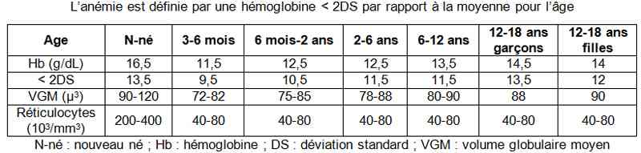
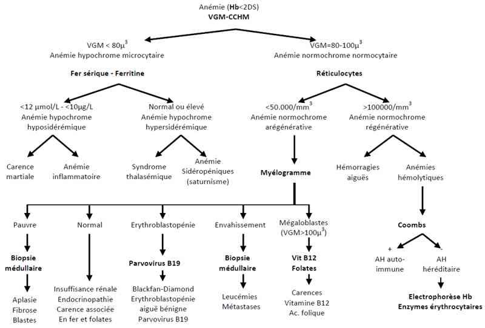

Bienvenue Sur Medical Education
Anémie de l'enfant
EnfantSpécialité : hematologie / pédiatrie /
Points importants
-
Classer l'anémie sur VGM et les réticulocytes qui doivent être toujours demandés afin de limiter les examens complémentaires inutiles et coûteux
-
L'anémie la plus fréquente chez l'enfant est la carence martiale
-
L'association d'une anémie à une leucopénie et/ou une thrombopénie chez un enfant fatigué et/ou fébrile doit faire pratiquer un myélogramme (crainte d'une leucémie)
Présentation clinique / CIMU
SIGNES FONCTIONNELS
-
Asthénie, dyspnée d'effort (anémie chronique)
CONTEXTE
Présentation clinique / CIMU
SIGNES FONCTIONNELS
- Asthénie, dyspnée d'effort (anémie chronique)
CONTEXTE
Terrain
- Origine ethnique (drépanocytose, thalassémie)
Circonstances de survenue
- Recherche d'une carence martiale, d'un saturnisme (ingestion d'écailles de peinture)
EXAMEN CLINIQUE
- Recherche d'une splénomégalie, d'une hépatomégalie, d'adénopathies
- Recherche d'une hématémèse, d'un méléna, d'une hémoptysie, de ménométrorragies
-
Choc hémorragique ou troubles de la conscience (anémie aiguë) :
- pâleur cutanéomuqueuse
- souffle systolique anorganique
- Cassure de la courbe staturo-pondérale
EXAMENS PARACLINIQUES SIMPLES
- Constantes vitales (FC, PA, FR, SpO2, T°) et poids
- Hémoglobine capillaire
Signes paracliniques
-
Classer l'anémie sur VGM et les réticulocytes
 _771 Tableau Définition d'une anémie chez l'enfant
- NFS + plaquettes + réticulocytes
Diagnostic étiologique
ANEMIE AREGENERATIVE OU PEU REGENERATIVE (réticulocytes < 50-100 000/mm3)
Anémie microcytaire (VGM < 80 µ3) et hypochrome (CCHM < 30%)
- En pédiatrie, la première cause d'anémie est la carence martiale (~40% des nourrissons de 6-18 mois)
- Le fer sérique est bas (< 12 µmol/L), ainsi que la ferritine (< 10 µg/L), avec effondrement du coefficient de saturation de la sidérophiline (< 10-12%)
- La carence martiale est le plus souvent liée à une carence d'apports du fait d'une inadéquation entre les besoins importants et la faible teneur en fer du lait maternel
- La carence martiale est plus rarement liée à un défaut d'absorption (intolérance au gluten) ou à un excès de perte (oesophagite compliquant un reflux gastro-oesophagien)
Anémie macrocytaire (VGM > 100 µ3)
- Par carence en vitamine B12 ou en acide folinique (dosages sériques)
- Le diagnostic étiologique nécessite parfois un myélogramme (avis hématologique)
Anémie normocytaire (VGM 80-100 µ3), normochrome et non régénérative
-
Le myélogramme recherche la cause du défaut central de production médullaire :
- envahissement médullaire par des blastes (leucémies) ou des cellules tumorales (neuroblastome, lymphoblastome)
- ou aplasie médullaire (avis hématologique)
ANEMIE REGENERATIVE (réticulocytes > 100 000/mm3) normocytaire et normochrome
Régénération d'une hémorragie aiguë
Hémolyse
-
Signes :
- hyperbilirubinémie mixte
- effondrement de l'haptoglobine
- élévation des LDH
- voire une hémoglobinurie (urines rouges) en cas d'hémolyse intravasculaire
-
Le test de Coombs permet de distinguer :
-
anémies hémolytiques constitutionnelles (les plus fréquentes) :
- Coombs négatif
- hémoglobinopathies (électrophorèse de l'hémoglobine) : drépanocytose ou thalassémie
- enzymopathies (déficit en G-6-PD ou en PK)
- sphérocytose ou Minkowski-Chauffard (résistance globulaire)
- tous examens qui doivent être prélevés avant transfusion sanguine
-
anémies hémolytiques acquises :
- Coombs positif : anémie hémolytique auto-immune, rare, enfant < 4 ans ayant fait une infection virale ou à mycoplasme. Discussion d'une corticothérapie (avis hématologique)
- Coombs négatif : syndrome hémolytique et urémique (schizocytes > 5%) / sepsis (hémoculture) ou paludisme (frottis sanguin) / immuno-allergique (médicamenteuse)
-
anémies hémolytiques constitutionnelles (les plus fréquentes) :
Traitement
Traitement de la carence martiale
- Consiste en une supplémentation en fer
-
Fer édétate de sodium (Ferrostrane® Sirop à 0,68% - flacon 125 mL) :
- 1 cuillère à café = 5 mL apporte 34 mg (0,6 mmol) de fer, 14 mg (0,6 mmol) de Na, 5 mg d'éthanol
-
posologie :
- 5-8 kg : 1-2 cuillères à café
- 8-12 kg : 2-3 cuillères à café
- 12-20 kg : 3-4 cuillères à café
- 20-30 kg : 4-5 cuillères à café
- > 30 kg et adulte : 3-6 cuillères à café, en fractionnant les prises à distance d'un repas farineux
- Acide folique (Spéciafoldine® cps à 5 mg : 1 à 3 cps/jour)
Indications de transfusion sanguine
- Tolérance clinique plutôt que chiffres absolus d'hémoglobine (< 6-8 g/dL sont une indication)
Algorithme
-
Algorithme : anémie chez l'enfant
 _772 Algorithme Algorithme : anémie chez l'enfant
Auteur(s) : Jean-Hugues DALLE, Jean-Christophe MERCIER